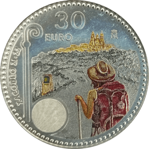

CoinWorld
Colecciones numismáticas
Piezas numismáticas
Contenido exclusivo de mi propia colección
Aprende sobre monedas y billetes del mundo
Variaciones, cecas, acuñaciones y más
Gestionar una colección
En un futuro se prevé añadir una base de datos de monedas y billetes de todo el mundo, en la que el usuario podrá añadir qué elementos tiene en su colección
Monedas
 Monedas de colección Monedas conmemorativas
Monedas conmemorativas
 Monedas circulantes
Monedas circulantes
Billetes
 Billetes de euro
Billetes de euro
 Billetes antiguos
Billetes antiguos
 Billetes extranjeros
Billetes extranjeros
Exonumia
 Tokens
Tokens
 Recuerdos
Recuerdos
 Réplicas
Réplicas